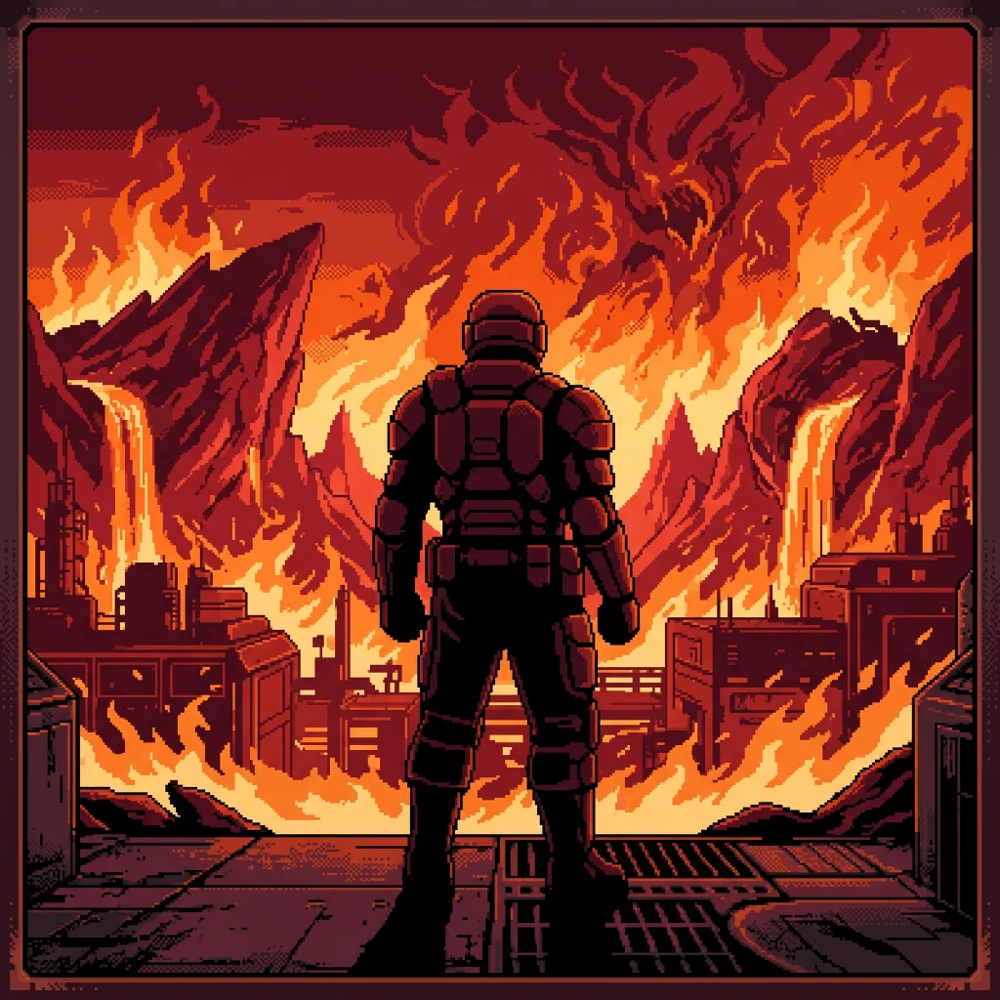

Mars
Doom · 1993Doom opens on the Union Aerospace Corporation's facility on Phobos, where a teleport experiment has torn something open. The marine who fights back through it was posted to Mars for assaulting a superior officer who ordered him to fire on civilians.